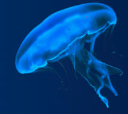
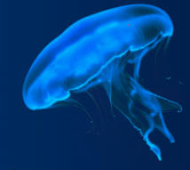

Para previnirmos a extinção dessa espécie pode ser feita com várias medidas: Preservação do Habitat:É importante preservar o habitat dos cágados para garantir sua sobrevivência. Isso pode ser feito através de medidas de conservação, como a criação de áreas protegidas e a restauração de habitats degradados;
Combate à pesca ilegal: A pesca ilegal é uma grande ameaça aos animais de Abrolhos. É importante fortalecer a fiscalização e o combate à pesca ilegal para proteger as espécies ameaçadas de extinção;
Educação Ambiental: A educação ambiental pode ajudar a aumentar a conscientização sobre a importância dos cágados e a necessidade de protegê-los. Isso pode ser feito através de campanhas de educação ambiental, exposições e eventos;
Monitoramento e controle de espécies invasoras:A introdução de espécies invasoras, como os ratos, é uma das principais ameaças à biodiversidade de Abrolhos. O monitoramento constante e o controle dessas espécies são fundamentais para evitar a extinção de animais nativos;
Pesquisas Científicas: A pesquisa científica pode ajudar a entender melhor os fatores que estão levando à extinção dos cágados e a desenvolver estratégias de conservação. Isso pode ser feito através de estudos de campo, laboratório e colaboração com outras instituições de pesquisa.
Criação de áreas marinhas protegidas: A criação de áreas marinhas protegidas (AMPs) em Abrolhos é crucial para a conservação da biodiversidade. As AMPs limitam atividades humanas que podem impactar negativamente os animais, como a pesca e a exploração de petróleo.